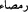

sarılmaları sebebiyle çoğunlukta sayılırlar.
[202]. Buhari, Bedü’l-halk 8; Müslim, Cennet 6.
[203]. Kudâî, Müsnedüşşihâb, I, 201.
[204]. İbn Kesir, IV, 287.
[205]. Buharî, Büyû’, 2053; Müslim, Radâ, 1457.
[206]. İbn Kesir, IV, 291. Hadiste geçen __WORD__ (şamtan) kelimesi __WORD__ (şamtâu)
kelimesinin çoğulu olup, “şamtâu”, baştaki saçların beyaz-siyah karışık bir hal alması
yâni kırlaşması demektir. __WORD__ (ramsâ) da __WORD__ (ramsâu) kelimesinin çoğulu olup göz
çukurunda oluşan çapak anlamına gelir.
[207]. İbn Kesir, IV, 291.
[208]. İbn Kesir, IV, 292.
[209]. Terğib, V, 492.
[210]. Tirmizi, sıfatu’l-cenne 23; Ahmed b. Hanbel, el-Müsned, III, 76.
[211]. Kurtubî, Tefsir, Vâkıa 37. âyet.
[212]. İbn Kesir, IV, 294.
[213]. Buhari, Tıb 42, Rikak 50; Müslim, Îman 374.
[214]. bk. Müslim, Îman 271, 374.
[215]. bk. Ahmed b. Hanbel, el-Müsned, I, 401.
[216]. Buhari, Enbiyâ 7; Müslim, Îman 379.